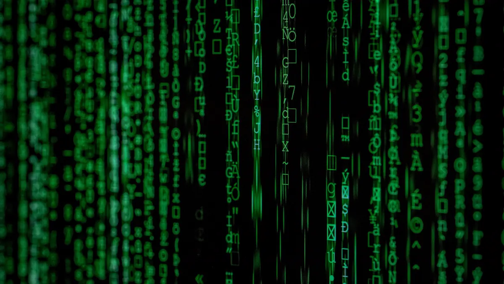

notes archive / threats & attacks
CWE-78: OS Command Injection
When a web form becomes a root shell

Command Injection happens when an attacker tricks a system into executing unintended commands: convincing a computer to follow whispers it was never meant to hear.
When user inputs aren’t properly sanitized, they can escape their intended context and reach the command shell. Suddenly, what was supposed to print a name might delete files or steal data. That’s the quiet power of injection.
Definition & Goal
OS Command Injection is a type of attack where the attacker’s goal is to execute arbitrary commands on the victim’s operating system via a vulnerable application.
- Executed through a vulnerable web app
- Gives attacker full control over the server
- Can run any command the app process has access to
Why It’s So Dangerous
- Runs arbitrary OS commands
- Works even without direct server access
- If the app runs as root → Game over
How It Works
User input is directly inserted into system commands without sanitization.
Characters like ;, |, &&, $() break out of the intended command.
# Vulnerable code
user_input = "report.txt"
system("cat " + user_input)
# Attacker enters:
report.txt; rm -rf / --no-preserve-rootThis is why OS Command Injection remains one of the most devastating vulnerabilities in existence.
One semicolon. One pipe. And the server becomes yours.
quick review
tap to revealWhat causes OS Command Injection?
User input passed to a shell without sanitization, enabling escape via ; | && $()
Which characters enable injection?
Semicolons (;), pipes (|), double ampersands (&&), subshell $().
Why is this critical?
Arbitrary OS command execution; root access means full system compromise.
How do you prevent it?
Never pass raw input to shells. Use parameterized APIs and allowlists.
key terms
- CWE-78
- OS Command Injection weakness
- RCE
- Remote Code Execution
- Shell
- Command-line OS interface
- Sanitization
- Removing dangerous input characters
- Allowlist
- Permit only known-safe inputs
- Least Privilege
- Minimal permissions for processes